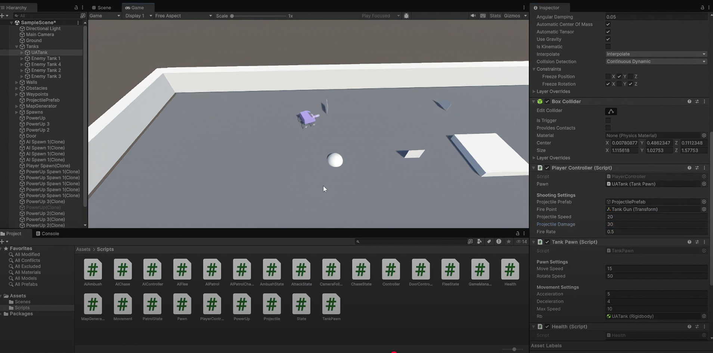
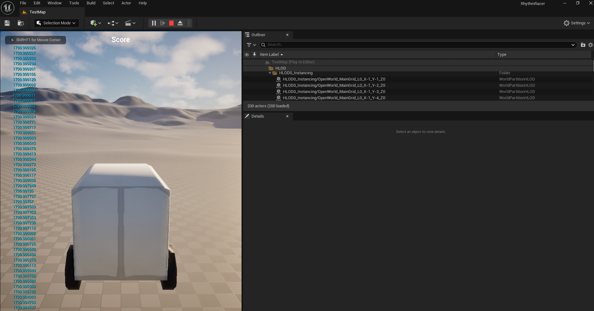
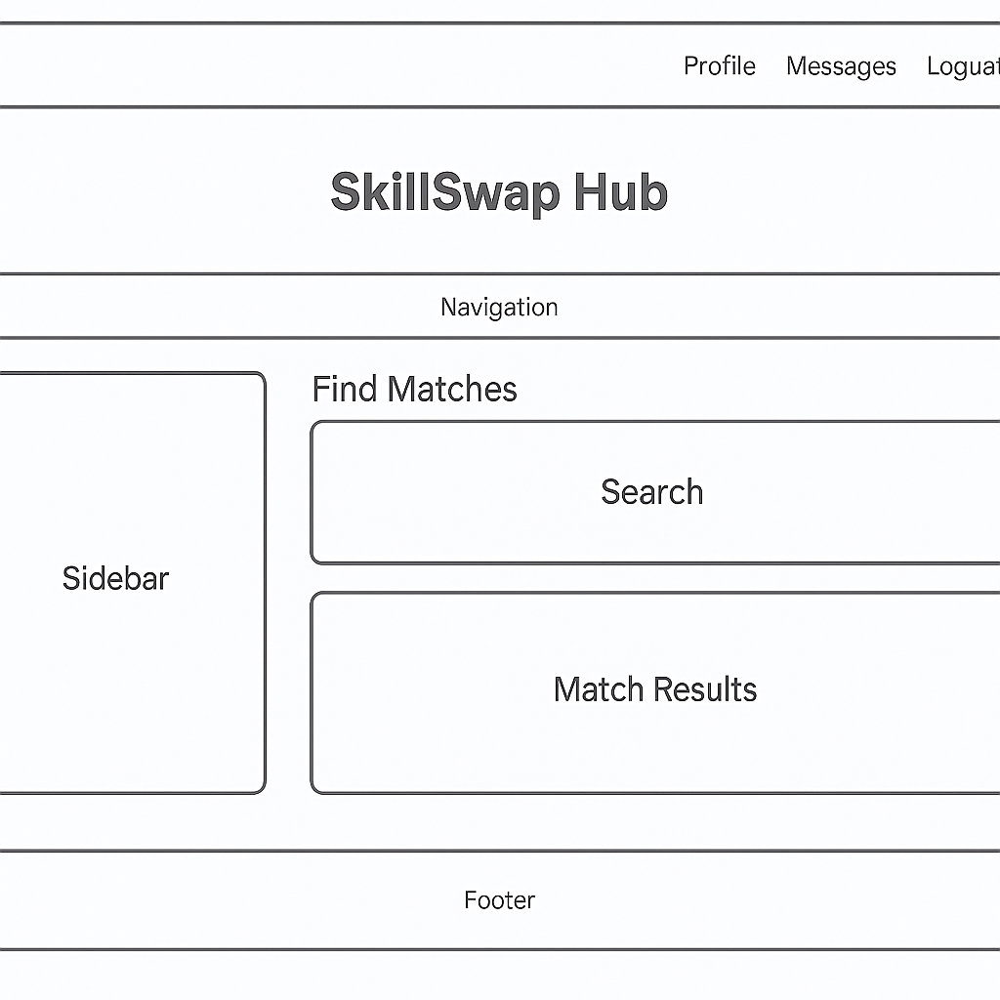

UATanks Gameplay
This image supports the UATanks project by showing a playable tank-based Unity game environment with implemented gameplay systems.
The objective language below follows the University of Advancing Technology Game Programming degree objectives, rewritten to reflect understanding while still preserving the original meaning.
Each project listed below links to a dedicated subpage that includes additional explanations and supporting evidence. This page also includes visual proof from several major projects used throughout the objectives.
The screenshots below provide direct visual evidence of several of the projects referenced throughout the objectives, including the UATanks Unity project, the Unreal Engine driving system, the SkillSwap Hub web application, and the Passwordless Security SIP prototype.

This image supports the UATanks project by showing a playable tank-based Unity game environment with implemented gameplay systems.

This image supports the Unreal Engine driving project by showing the vehicle prototype and movement-focused gameplay setup.

This image supports the SkillSwap Hub project by showing the browser-based interface and interactive skill-matching layout.

This image supports the Passwordless Security SIP prototype by showing the overall system concept and connected authentication flow.

This image supports the SIP prototype by showing the login portion of the interface and the prototype's authentication concept.

This image supports the SIP prototype by showing a second interface state tied to scanning and secure authentication behavior.

This image supports the SIP prototype by showing the security-focused portion of the design and reinforces the technical direction of the system.
Create and implement multiple completed game experiences, including 3D games, using widely used tools, programming languages, and software platforms such as web, console, PC, or mobile environments.
This demonstrates the objective because UATanks is a completed 3D Unity game project that includes player movement, AI enemies, combat, pickups, scoring, and game flow systems, proving the ability to create a playable experience using a common engine and language.
This demonstrates the objective because the Driving System shows a second 3D gameplay experience created in Unreal Engine, proving the ability to work in more than one major development environment while still producing interactive results.
This demonstrates the objective because the Final project represents a more traditional adventure-style game experience, showing that completed interactive work was not limited to vehicle or combat prototypes alone.
This demonstrates the objective because the Cave Exploration Tracker is a completed interactive application with user input, object creation, and display behavior, showing the ability to build finished software experiences beyond pure game engines.
This demonstrates the objective because StudySprintTracker is a completed interactive software project with data entry, display, and application behavior, showing that development work extended across multiple types of digital experiences.
Plan, design, and develop the systems, structure, and supporting architecture required to build and maintain a complete game project from start to finish.
This demonstrates the objective because the GameManager acts as the central control system for the game, managing players, AI units, spawning, score tracking, and overall game state. This shows the ability to design a core architecture component that connects and coordinates multiple independent systems into a complete project.
This demonstrates the objective because the MapGenerator dynamically builds the game environment at runtime using tile-based logic, walls, and structured layout rules. This shows the ability to design systems that generate and manage game world infrastructure instead of relying on static level design.
This demonstrates the objective because the Spawn System controls when and where gameplay elements appear, supporting runtime instantiation requirements and helping the larger project function as an organized system instead of a fixed scene.
This demonstrates the objective because the Movie Planner project required an organized structure for handling user input, storing information, and displaying results in a way that kept the application readable and maintainable.
This demonstrates the objective because the Budget App depended on clear application structure, data flow, and organized logic to track user information and present it in a usable software format.
Apply and evaluate core data structures and algorithms that are commonly used in game development to support gameplay systems and interactive mechanics.
This demonstrates the objective because enemy tanks use decision-making logic to determine whether to chase, flee, or patrol based on player position and conditions, showing real gameplay algorithm design.
This demonstrates the objective because it uses logic to determine when and where enemies should appear, including randomization and conditional spawning, which requires structured algorithmic thinking.
This demonstrates the objective because the Performance Testing project directly measured array generation and sorting behavior, requiring algorithm analysis, timing comparisons, and an understanding of how program performance changes with input size.
This demonstrates the objective because it compares user input using conditional logic to find matches, showing structured data comparison and decision-making.
This demonstrates the objective because it evaluates multiple inputs such as time, device, and location to produce a security score using rule-based logic.
Use a structured software development process to analyze a problem, design an appropriate solution, build the system, and test it to ensure it functions correctly.
This demonstrates the objective because the SIP project began with a clearly defined problem related to password fatigue and security, then moved through research, planning, prototyping, and revision based on feedback. The project shows a complete development cycle from initial idea to a functional and presentable solution.
This demonstrates the objective because SkillSwap Hub started as a concept for connecting users based on skills and was built into a working web application through structured planning, coding, testing, and iterative improvements to both functionality and user interface design.
This demonstrates the objective because UATanks required repeated testing and debugging of gameplay systems such as AI, movement, projectiles, and powerups. Each system was refined over time to improve performance, balance, and player interaction, showing continuous development and testing.
This demonstrates the objective because the driving system was built by first defining movement goals, then implementing acceleration and steering logic, followed by testing and adjusting the behavior until the controls felt responsive and consistent during gameplay.
This demonstrates the objective because the Unit Testing project focused directly on verifying software behavior with assert-based checks, showing a deliberate testing process rather than relying only on visual inspection or manual trial and error.
Demonstrate development ability across multiple programming languages, tools, environments, and platforms, including advanced or experimental concepts related to game programming.
This demonstrates the objective because UATanks and its related systems were built in Unity using C#, showing gameplay scripting, object management, and development in a professional game engine environment.
This demonstrates the objective because the Driving System uses Unreal Engine and blueprint-based logic, proving the ability to work in a second major development environment with a different programming workflow.
This demonstrates the objective because projects such as SkillSwap Hub, the portfolio website, and the SIP prototype rely on browser-based development using structured markup, styling, and interactive scripting.
This demonstrates the objective because the SimpleCalculatorGUI project shows desktop application development with event-driven behavior, user input handling, and interface logic outside of game engines and web browsers.
This demonstrates the objective because the Final project expands the portfolio into another development context and shows that game-related programming skills were applied beyond the same repeated engine workflows.
Develop collaboration, mentorship, and professional leadership skills by working with others and presenting polished, completed projects to a professional standard.
This demonstrates the objective because the SIP project involved receiving feedback from instructors and reviewers, adjusting the scope of the project, and refining the design based on that feedback. This shows the ability to accept guidance and improve work through mentorship.
This demonstrates the objective because the portfolio organizes projects, objectives, and supporting evidence into a professional format that can be reviewed by external faculty or potential employers, showing strong presentation skills.
This demonstrates the objective because the Boards page clearly explains how each project meets specific objectives, requiring structured communication, organization, and the ability to present technical work in a clear and professional manner.
This demonstrates the objective because StudySprintTracker required clear explanation of application behavior, settings, file handling, and user workflow, showing the ability to communicate a polished software project to others.
This demonstrates the objective because the Cave Exploration Tracker involved explaining class structure, user interaction, and refinements to the interface, showing professionalism in both presentation and iterative improvement.